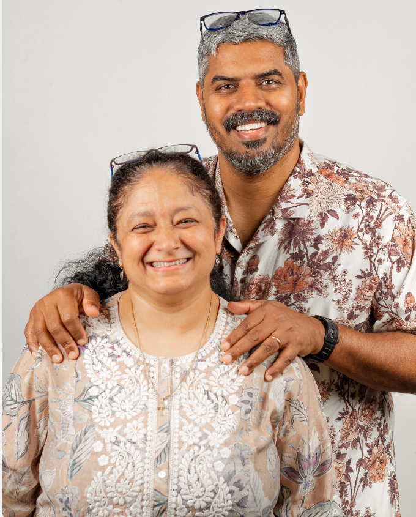
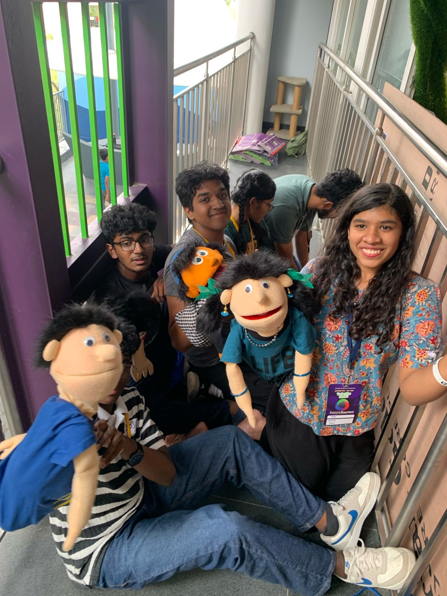
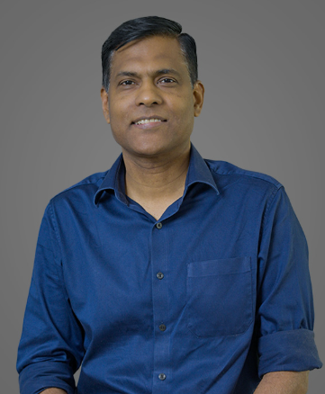
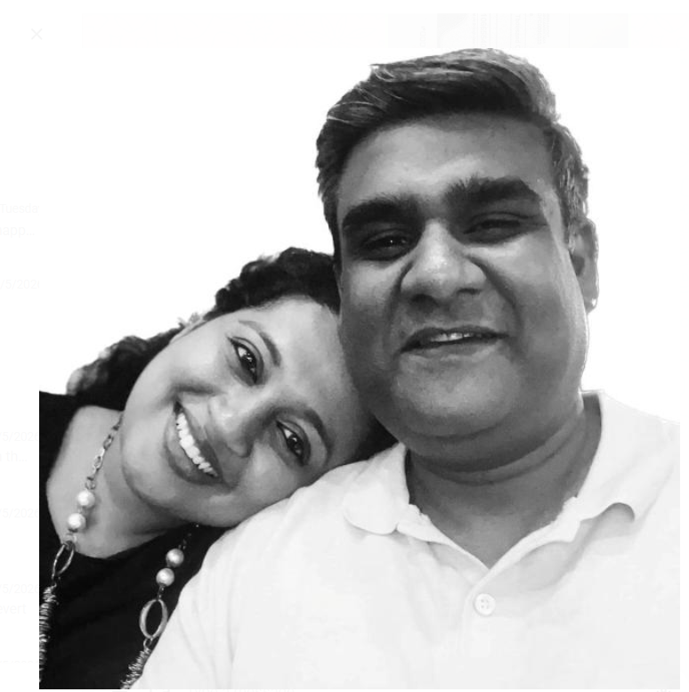
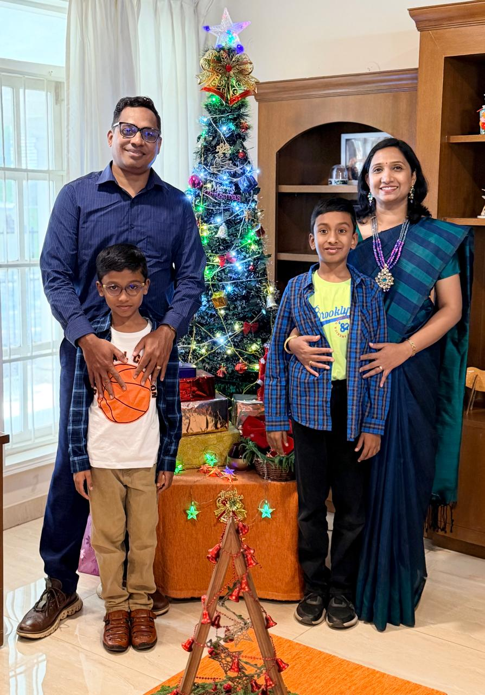

May 2026 — Bengaluru, India · As told by David
In May 2026, our family walked through a month of physical pain, financial uncertainty, and a near-costly decision — and came out the other side more grateful, more grounded, and more protected than we had ever planned for. We served at children's and teens' camps, built technology for a ministry, and were stopped from making a grave mistake by the timely wisdom of a trusted pastor. God's hand was unmistakably present in every turn.
May did not begin gently. Your father, David, was dealing with severe back pain and an injured left leg, making regular trips to a physiotherapist near our home. There was nothing dramatic about it on the outside — just the slow, humbling work of a body that needed care.
Then, on May 4th, the phone rang.
"Brother David, would you be willing to come and talk to us? We really want to build some revenue streams that will enable us and take us further."
— Brother George Ebenezer, on the phone that changed the month

Brother George Ebenezer led a ministry called Beyond Barriers, which worked with children, teenagers, and counselors. He had just gone through a devastating season — out of a team of 15 to 17 people, at least 12 had quit in quick succession. It had begun when a video editor left dramatically, creating a ripple of exits that gutted the team.
Your parents, David and Loretta, had volunteered with Beyond Barriers before. They knew the work. And they were also at their own crossroads: neither had a job. Both were praying, seeking God, asking what was next.
So when Brother George called, it felt like an answer. We stepped in — not knowing yet how God would use even this moment as a test.
The first assignment was the Life 180 Teen & Adolescent Residential Camp — a four-day residential experience for young people between 14 and 18 years old. About 22 young people attended, and with the team, the total group was 25 to 27 strong.

These teenagers were being trained in a beautiful idea: how to minister to younger children. They learned puppetry. They practiced teaching. They were given the tools to pass on what they themselves were receiving.
The teaching came from the Book of Ecclesiastes, Chapters 7 and 8 — ancient wisdom about how to make choices, how to live with understanding, how to act with discernment. It was rich, deep material, spoken into young hearts that needed it.
Your mother Loretta and I also took part in what Brother George called the Blessing Station — one of eight spiritual "stations" the children moved through on the final day. At this station, a husband and wife (your parents) would sit quietly, and children would come to receive prayer.
There was no talk between either of us — we didn't ask what they wanted prayer for. Whatever the Holy Spirit laid on our hearts, we ministered. And the Holy Spirit moved in that place.
— David, describing the Blessing Station
The Life 180 camp was the rehearsal. The full camp was the performance.
The very next week, Beyond Barriers ran a three-day Children's Camp followed by a three-day Teens' Camp — and the young people who had been trained at Life 180 stepped up as ministers themselves. They carried the puppets. They taught lessons. The seed had already been planted; now it bore fruit.
Isaac and Nehemiah — your children, reading this story someday — were there too. You were part of it. You ran in the water games, played alongside other children, and were held in the middle of something bigger than any of us fully understood at the time.
The schedule ran from morning to evening, full and rich:
The men's session was one your father will not forget. Topics like sex, physical intimacy, identity, vulnerability, and digital addiction were placed on the table — not with shame, but with honesty. Boys spoke. They listened to each other. Something was unlocked.
"As we serve faithfully, we know our God is not in debt to any one of us."
While ministering at the camps, your father was also building technology.
Brother George had spent 30 years accumulating knowledge — counseling files, parenting guides, materials on teenagers, anger, sex, intimacy, stress, spiritual growth. He handed over 1 terabyte of data and said, effectively, "Do something with this."
Your father used a method called Retrieval-Augmented Generation (RAG) — a way of building a chatbot that doesn't just guess, but actually searches through real documents to give meaningful answers. He placed an AI agent on top of it and integrated the whole system with Telegram, so families and young people could access Brother George's three decades of wisdom through a simple chat interface.
It was fast work. Imperfect work. But it was the kind of creative, purpose-driven building that has always been part of who your father is.
This is the part of the story your parents most want you to understand.
Through the month, Brother George was asking your parents to formally join Beyond Barriers as directors — to sign papers, to commit, to help build revenue streams that would make the ministry self-sustaining. It felt like calling. It felt like confirmation. Loretta and David were praying through Deuteronomy Chapter 11 (a verse about stepping into a new land) and verses from Isaiah about God's provision.
But something in both their spirits was unsettled.
On May 21st, they went to meet Pastor Ashish Raichu at the APC Bible College. They had prepared. They brought the scriptures. They were ready to share their sense of calling.
Pastor Ashish listened carefully — and then, with deep wisdom, said something that stopped everything:

"David and Loretta, I don't think this is a wise thing for you to do. I'm looking at it purely from your side. Both of you have no income right now. Your first priority, David, is to take care of your wife, your children, and your parents. That requires income. Beyond Barriers is only giving you shares — which are not monetizable in any manner. Six to eight months will go by while you use your savings. Building a business normally takes two to three years. And the revenue from these ideas is very small. The scale is limited. Your return will be very little."
— Pastor Ashish Raichu, May 21, 2026
The words landed like cold water — clarifying, not crushing.
David and Loretta came out of that meeting "stunned and shattered" — not by Pastor Ashish, but by the realization of how close they had come to a decision that would have cost the family dearly. There was no salary being offered. There were no protections. And there were already many people hurt in the history of this ministry.
God, thank you that you didn't make us stumble. You didn't make us fall. We know you are holding us in your hands.
— David & Loretta's prayer, leaving the Bible college
And then — as if God had already arranged the door-closing on the other side — Brother George himself, while traveling to Kolar to speak at Baldwin's School, asked your father a question about vendor payments. Your father answered from his own principles and convictions. Brother George said, plainly:
"David, I don't think you and Loretta would be a great match coming on board with us. We are people who think very differently."
— Brother George Ebenezer, on the road to Kolar
Your father felt no hurt. He felt relief and wonder. God had closed the door from both sides at once.
Even as one door closed, another was quietly opening.
At the children's camp, your parents met a couple who would spark something new:

Andrew was a man who thought in terms of capital, scale, and market. He told your parents plainly that to do any kind of meaningful business, they would need somewhere between ₹40 to 50 lakhs of seed capital. He gave them a completely different lens for evaluating Beyond Barriers — not from the heart alone, but from the ledger.
He also had connections. He knew someone who wanted a software product built. He offered to make introductions.
From June 1st onwards, Andrew, David, and a third collaborator named Twain were going to sit down together and ask: should we build a startup? Should we pool seed funding? Should we enter the world of software services?
And separately, your father discovered a copywriter named Joanna Wiebe on YouTube — a Canadian who spoke about marketing in a way that gripped him. He downloaded everything. He took notes. He remembered that he had once been part of IBM's go-to-market team. Something stirred.
Near the end of the month, your father watched a video from Y Combinator — one of the world's most respected startup organisations. A partner was talking about a concept that made your father sit up straight.
The idea was this: every organisation needs an intelligence layer — a system that captures not just what decisions were made, but why they were made, what context surrounded them, and what results followed. A living memory for how an organisation thinks and acts.

Your father believed this wasn't just for companies. He believed every family could build one. A way of recording how you made decisions, what you prayed through, where God showed up, what mistakes you avoided — so that future generations don't have to start from zero.
This chronicle — the one you are reading right now — is part of that idea.
May 2026 was a month in which God orchestrated protection through pain. Your father's injured body slowed him down enough to be available. Your parents' unemployment made them hungry enough to say yes — and humble enough to finally hear "no." A pastor's wisdom arrived at exactly the right moment. A ministry leader's candour, which could have stung, instead felt like grace. And through camps filled with children, teenagers, worship, puppets, and laughter, your parents poured out what they had — not knowing that God was quietly refilling them with something better.
Isaac and Nehemiah — when you read this someday — know that your parents were not perfect navigators in May 2026. They were prayerful, willing, and sometimes nearly wrong. But they kept bringing every decision before Jesus Christ. And He, who holds all things, held them too. That is the inheritance worth passing on.